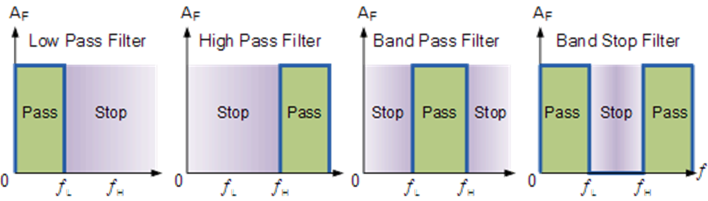
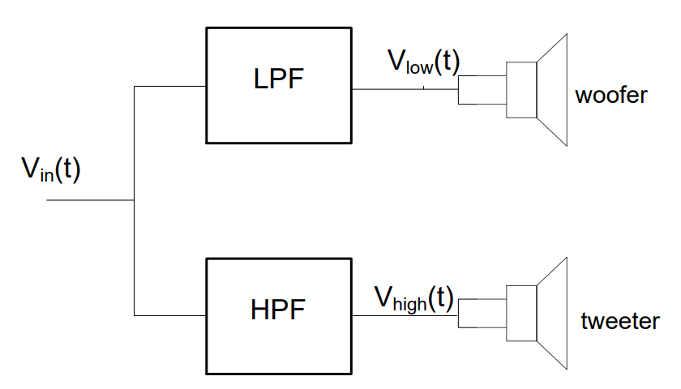
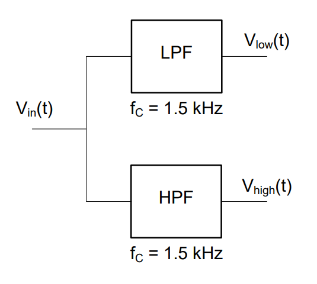
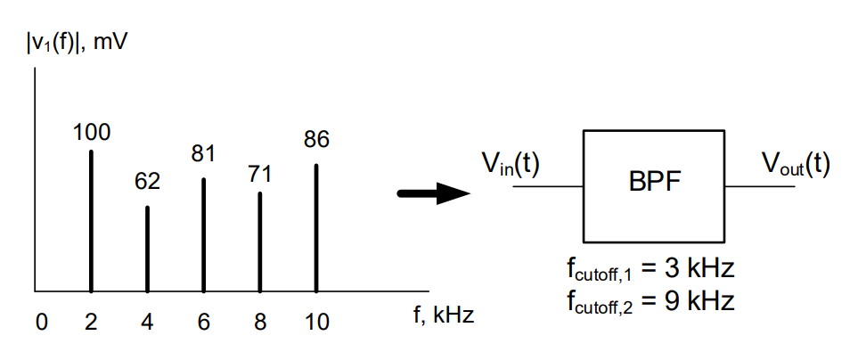
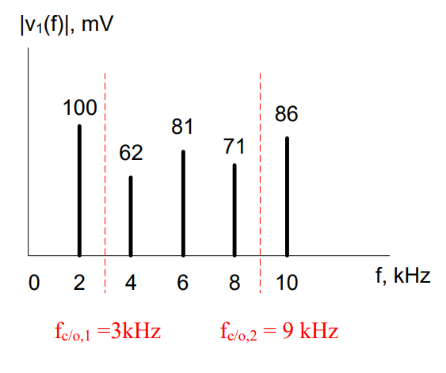
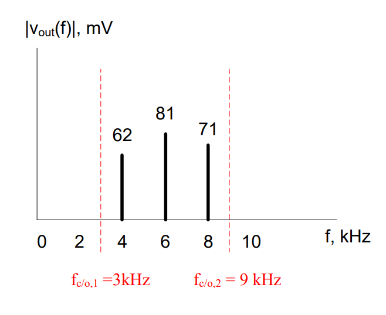

Objective 2.2#
LO# |
Description |
|---|---|
2.2 |
I can identify types of ideal filters, determine their cutoff frequencies, and analyze their output given an input sinusoidal signal or signal spectrum. |
Motivation#
Now that we understand analyzing a time-domain signal in the frequency domain, we can look at ideal filters. Ideal filters operate in the frequency domain and can help us keep and remove certain parts of a signal. For example, if you wanted to add more bass and less treble to a song, you would use an equalizer. In essence, an equalizer is a simple filter – one that allows us to boost specific frequencies and reduce others. If you wanted more bass, then you could reduce the volume of the high frequencies while keeping the volume of the low frequencies the same. In this lesson, we will look at signals in the frequency domain and learn the basic functions of filters.
Electronic Filters#
The bandwidth of a signal drives our information processing and transmission systems. We will often reduce the bandwidth of our signals using a device known as an electronic filter which only allows certain frequencies to pass through the device and rejects all of the other frequencies. While we need to be careful in how we do this (because we can drastically change the original signal if we do too much filtering), it can help us communicate information faster, by reducing the size of the signal we need to process and transmit.
The telephone is a good example of what happens to a signal when a signal is filtered too much. When we speak on the phone, our voice is converted into an signal limited to a bandwidth of 4 kHz, even though human voices commonly include frequencies greater than 10 kHz. The phone companies figured out the lower 4 kHz of your voice is enough to understand what is being said and even recognize the voice of the speaker. This meant they could save bandwidth by filtering out those higher frequencies. However, since those high frequencies are missing, we can clearly tell the difference between someone speaking to us in person and when that same someone speaking to us over the phone.
There are four basic types of ideal electronic filters:
Low Pass Filters (LPF) which only allow frequencies below a specific cutoff frequency (fc/o) to pass
High Pass Filters (HPF) which only allow frequencies above a specific cutoff frequency (fc/o) to pass
Band Pass Filters (BPF) which only allow frequencies between two specific cutoff frequencies (fc/o,1 and fc/o,2) to pass
Band Reject Filters (BRF) which block frequencies between two specific cutoff frequencies (fc/o,1 and fc/o,2).

Figure 5: The four basic types of filters
For the purposes of this course, you may assume the ideal filter does not change the amplitude or phase of the input, and all frequencies outside of the pass range are eliminated, starting at the cutoff frequency. Returning to the telephone example, telephone companies use a LPF with a cutoff of 4 kHz to eliminate the upper frequencies in your voice and limit the amount of bandwidth they must transmit to 4 kHz.
Example Problem 1#
Design a filter system for a stereo to allow only high frequency signals (≥ 1.5 kHz) to be sent to the tweeter and only low frequency signals (≤ 1.5 kHz) to be sent to the woofer.
Understand: Tweeters are speakers designed to reproduce high frequency sounds, while woofers are speakers designed to reproduce low frequency sounds.
Identify Key Information:
Knowns: The frequency at which we want split our signal into to around is 1.5kHz.
Unknowns: The type cutoff frequency
Assumptions: None
Plan: We want to divide our music signal into two pieces. We can do this by using two filters in parallel:

The low pass filter (LPF) is used to feed the woofer, since it blocks the high frequencies and allows low frequencies to pass. Likewise, we use the high pass filter (HPF) to feed the tweeter, since it passes the high frequencies and blocks the low.
Solve: Since the problem specifies a cross-over frequency of 1.5 kHz, we simply choose filters with cutoff frequencies of 1.5 kHz. The following filter system can be used to feed the woofer and tweeter:

Example Problem 2#
A signal passes through a band pass filter (BPF). What is the output signal?

Understand: The BPF eliminates frequencies outside the depicted cutoff frequencies and allows the frequencies within the band to pass.
Identify Key Information:
Knowns: The two cutoff frequencies and the BPF. We also know the input signal.
Unknowns: The output signal.
Assumptions: The BPF will cut off frequencies starting at 3kHz and 9kHz.
Plan: Plot the cutoff frequencies and eliminate frequencies outside of that band.

Solve: The output signal from the depicted band pass filter is shown in the frequency spectrum graph below:
